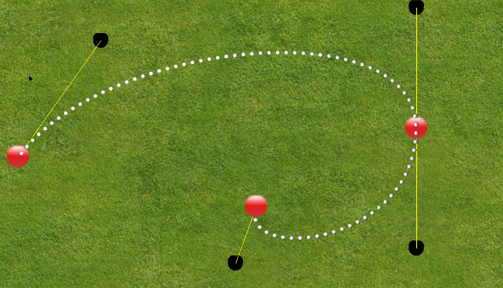
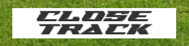
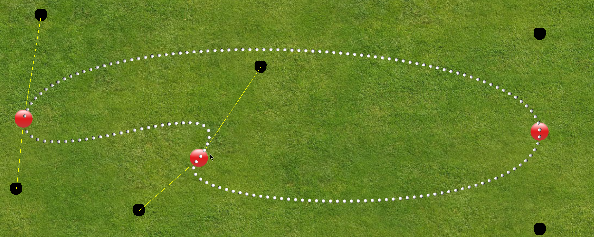

La linea di sfere che collega P0 a P3 la si può vedere solo con il primo punto, ed è solamente un aiuto visivo.

Come possiamo notare abbiamo il punto di controllo in rosso, a cui sono collegati altri due punti di controllo che vanno a definire il nostro poligono. Per aggiungere un punto di controllo basta tenere premuto il tasto control e cliccare con il tasto sinistro del mouse nella posizione in cui si vuole il punto di controllo;
Non è possibile avere meno di 2 punti in scena, e si arriva fino ad un massimo di 6 (si è scelto questo numero dopo alcuni tentativi per avere un risultato valido per poter permettere di giocare)

Durante la fase iniziale possiamo vedere una preview del nostro tracciato attraverso delle sfere bianche che lo vanno a comporre. Non sarà possibile iniziare la gara se il circuito non è stato chiuso correttamente con il pulsante in alto a destra "Close Track"
Il pulsante "Close track" crea altri due punti di controllo aggiuntivi per il primo e ultimo punto della pista e anche questo può essere controllato per dare una forma alla pista. 
Quando andiamo ad interagire con il poligono di controllo possiamo vedere interattivamente come il circuito andrà a trasformarsi.

Non è possibile avere delle strade sovrapposte, in quanto avrebbe comportato confusione nel giocatore per la direzione da intraprendere.
Una volta che si è deciso il tracciato da creare basterà premere il pulsante "Start" in basso a destra per creare il vero e proprio tracciato e far partire il conto alla rovescia per l'inizio della gara

Il risultato finale sarà il seguente:

Una volta che la gara è iniziata,in contemporanea e nello stesso punto le due macchine compariranno sulla griglia di partenza, la macchina arancione è controllata dal pc, la macchina verde il giocatore, l'avversario seguirà il percorso dettato dalle curva di Bezier, mentre il giocatore userà i controlli per cercare di vincere la gara.
I tasti per usare la macchina sono W,A,S,D rispettivamente per avanti, indietro, sinistra e destra.
Le regole sono semplici, bisogna tagliare il traguardo prima dell'avversario, non si può uscire dal tracciato, pena la fine della gara e il caricamento di un nuovo livello.